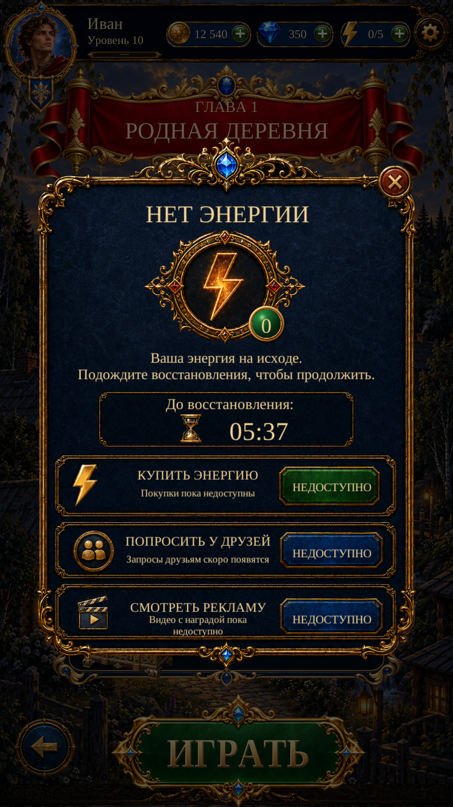

Visual Page 16 · Out of Energy R1
Actual Unity Play Mode captures of the native energy panel. Scenario panel, energy medallion, action buttons and reference icons; live Russian/English labels, real energy/countdown and a working Close control.
The timer uses the existing 30-minute refill interval. These test saves have different timestamps to verify countdown and regeneration. No fake timer or mock energy grant was added. Energy becoming available updates the panel; it does not start a level automatically.

Unity · energy gate · Russian · 941×1672Purchase, friend-request and ad rows are designed but unavailable: current services cannot fulfill them. The reference price is not a verified store price. The modal dims the actual Pre-Level page; the existing standalone resource-header route uses a clean village environment and returns Home.
Scenario: five successful jobs, 33 CU. Final Unity checks: 10 Edit Mode + 14 Play Mode tests passed. Gameplay design, existing artwork and service/settings files remain unchanged. No APK build or physical-phone test.
Implementation and exact checks · Reference differences · Changed files